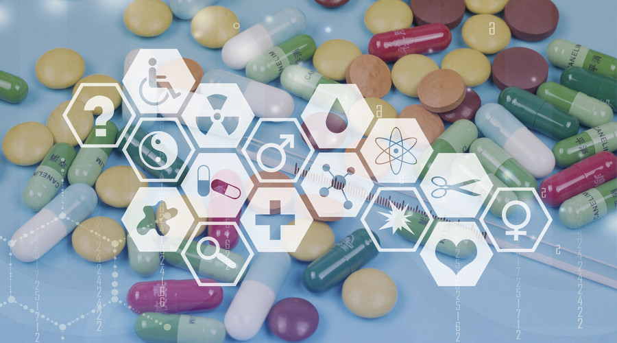

未来发展，互联网+医药将成为新主流！
互联网移动技术推动行业跨界，并带动传统产业进入重构时代，在互联网+医疗+大数据的催生下将会引领医疗体系进入智慧时代。
相对而言，医疗医药领域却进展缓慢，原因包括政府管制程度较高、行业整体生态系统复杂、地域医院之间相互割据、在线医疗医药的监管和行业标准尚不到位以及民众在线消费习惯有待培养等多方面的因素。
但应当认识到的是，在线药品销售和医疗服务能够有效优化流程、降低成本，满足日益多元的消费者需求，并且达到资源配置优化的作用，尤其是当前中国医疗资源匮乏、分布不均衡的状态下，具有很大的应用价值。
因此，沿印着政府放开医疗医药产业引入市场机制的改革方向，在产业政策逐步完善、行业运作更加规范的基础上，随着配套技术的日渐成熟以及消费者观念的逐步培养，互联网移动技术和医疗医药产业的融合以及迭代将是不可避免的。
基于我们对该趋势的判断，并结合国外产业动态和国内政策走向、行业发展以及企业布局现状，本文对未来3-5年医药电商和在线医疗的发展，以及医疗医药生态系统的演进进行了预测。
目前医药电商已经随着政策的逐步放开迈入发展阶段，尽管发展速度比起其他商品电商而言势头较弱。医药电商无疑会促进价值链上各利益相关主体利益的重新分配与各环节的重构，也会推动线下企业的转型，但目前政策仍然是行业发展最大的壁垒。在线医疗已经出现了百花齐放的态势。
而随着在线医疗服务质量的提升，它将部分替代线下服务并满足浅层次的医疗需求。互联网移动技术将进一步渗透医院的运营和服务流程，并且在线上和线下服务都不断优化的进程中，两者将紧密融合，逐步突破地域和传统流程的壁垒，提升资源配置的效率。
当然，新技术和传统产业的融合必然面临诸多壁垒，而将来这些壁垒的克服还取决于政策的走向、民众观念的改变以及整个产业中参与各方利益的博弈。但应当认识到，在技术加速更迭，产业以及运营模式快速更新的情况下，企业善于把握未来并勇于行动已经越来越重要。希望这篇报告能够带动大家关于医药电商和在线医疗的思考与探讨，把握风向，抢占先机。

趋势一：预期约1500亿的医院与零售终端空间将转换至线上
目前药品销售渠道主要集中于医院终端以及零售终端，两者占比接近8:2，而网络终端(非处方药)仅占极小一部分。
从政策放开的前提之下来看医院药品销售情况，住院药品放开可能性小，医院仍将掌握绝对控制权；门诊药品则将分流至零售终端与线上，然而注射药品无法网购，其网上转移率将受到一定限制。
零售终端则受到双向影响，一方面，医院端药品外流后，零售终端无疑是获益者之一；另一方面，网售处方药品政策放开后，医药电商对药店的冲击也在所难免。
趋势二：医药电商将促进价值链上各环节的重构
传统医药行业价值链中，制药企业具有较高的定价权，药品批发企业集中度较低且多层代理(全国级，省级，市级)较为复杂。医院则普遍存在“以药养医“的情况，压缩了药店的盈利空间。价值链终端的患者处于极不利的被动地位，饱受高药价的煎熬。而医药电商的发展将促进价值链上的生产、经销、配送以及终端用户环节的重构，主要体现在以下七个方面。
趋势三：医药电商格局将朝有机结合、互惠共赢的模式发展
未来医药电商发展格局将取决于两个关键要素的交互作用，一是参与者对医疗资源的控制力度，二是企业是否能够引导流量转化。其中，对医疗资源控制力度核心涵盖了对上游药品的议价能力，整合下游医院以及药店的能力，掌握物流的能力，以及提供医疗服务的能力。而流量的建立以及转化则是医药电商模式中除了增值服务以及广告之外的主要变现途径之一。
趋势四：医药电商将促使线下企业转型
2014年中国药品零售市场规模2817亿元，处于弱增长环境之中，个别城市销售规模出现负增长，不少药店出现亏损不得不减少开店数量，促使药企也开始剥离线下药店渠道。此外，拥有医药资源的药厂正展开线上布局，拓展其主营业务之外的收入，近期跨国药企如中美天津史克制药有限公司上线天猫官方旗舰店，成为国内首个开设自营电子商务渠道的跨国药企。
在政策开放的前提之下，对线下医药企业来说是机遇，能够拓展同时弥补现有销售渠道的不足，因此从线下转型到线上是大趋势。而面对线上转型，不同的模式的选择需要依据企业自身的特点以及定位而决定。
趋势五：互联网移动技术将重塑线下医院运营和服务流程
随着人们对医疗服务水平要求的提高，医疗技术的发展以及医院管理的日益复杂，医疗信息化已经成为医院发展不可或缺的工具。就中国医院的信息系统状况来看，目前大部分医院虽然已经建立了医院信息管理系统，但临床信息系统的实施比率还较低。医院对于信息的应用还局限于基本的财务和收费方面的处理，对于临床和服务流程的优化作用非常有限。
同时由于医院没有动力开放内部数据，医院信息化存在“信息孤岛”问题，各医院系统相互独立，缺乏标准化的电子病历和业务流程，使得患者在医院和各级诊疗体系之间的转移手续繁复，阻碍了分级诊疗制度的推进。
趋势六：“以服务患者为核心”，互联网医疗将推动传统医疗服务模式的重构
“以服务患者为核心”是互联网企业应当具备的思维模式。而围绕这一主题，互联网医疗企业将结合互联网、移动、传感技术，协调医疗服务体系中各方的核心诉求，建立起对接包括患者、医院、药企，社保等多方，让资源在线上和线下有机结合的全新的医疗生态系统。
趋势七：智能可穿戴设备深度融入健康医疗领域，硬件、软件以及相关服务将迎来巨大的发展空间
进入物联网时代，智能可穿戴设备作为将消费者、医疗健康服务、数据紧密连接的典型代表倍受关注。可穿戴设备可以方便地佩戴在用户身上或者整合到日常物品中，通过软件支持和后方平台和云端进行数据交互整合，监测用户生理状况和周边环境，让用户快速查看、得到预警或者分享信息。
智能可穿戴设备具有可以解放双手、环境感知、便利、智能、持久以及专注的特性有望成为继智能手机之后新一代的智能硬件热点。根据易观智库的数据，中国2013年可穿戴设备市场规模为9亿元，预计在2016年将扩容至228亿元。
趋势八：医疗大数据将引领医疗体系进入智慧时代
医院信息化、区域医疗信息的共享以及移动传感技术的进步将带来医疗数据的爆炸性增长。而与此同时，商业保险和移动医疗企业的崛起，国家医保控费、药企研发营销以及医院医生提升效率的诉求也给大数据的应用提供了市场空间。医疗大数据的时代已经拉开帷幕。
随着对于结构性和非结构性医疗数据（如医学影响、照片等）分析能力的加强，医疗服务体系将实现从数据收集到数据分析再到数据应用的过渡，大数据将渗透到医疗体系的每个环节，改变每个参与主体，引领医疗体系进入智慧时代。